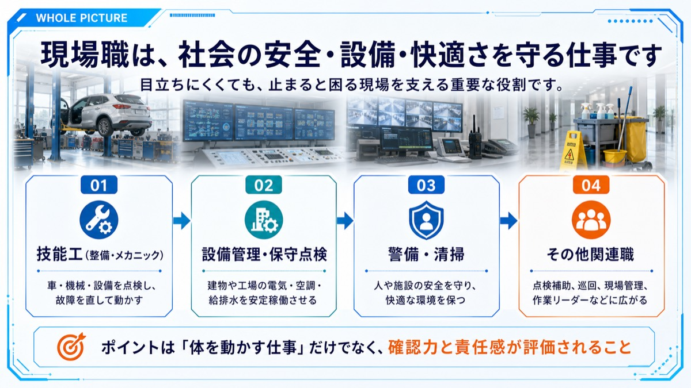
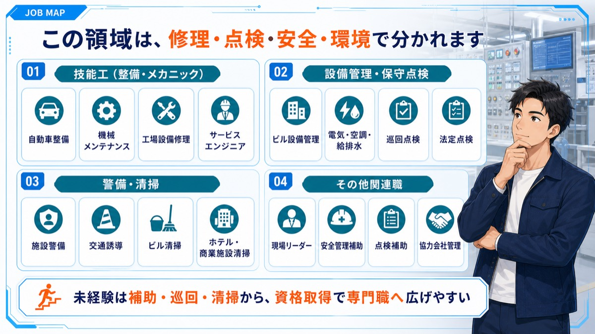
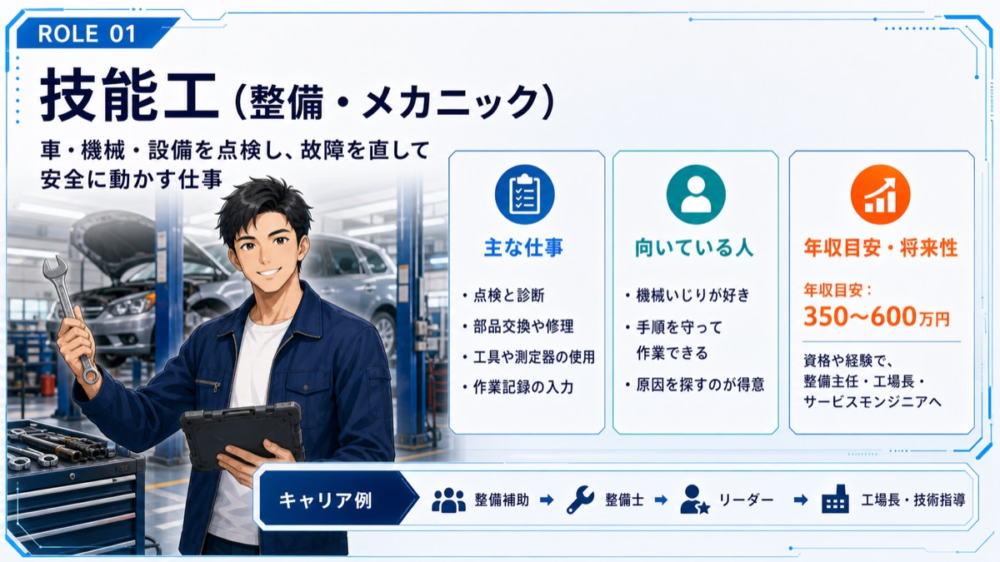
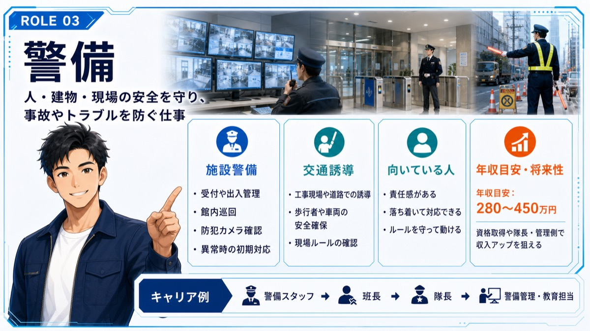
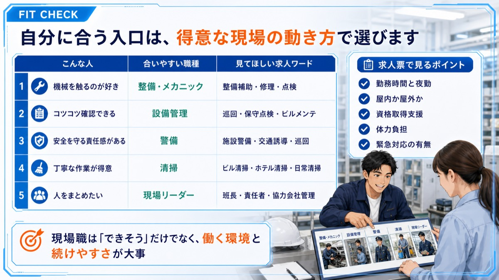
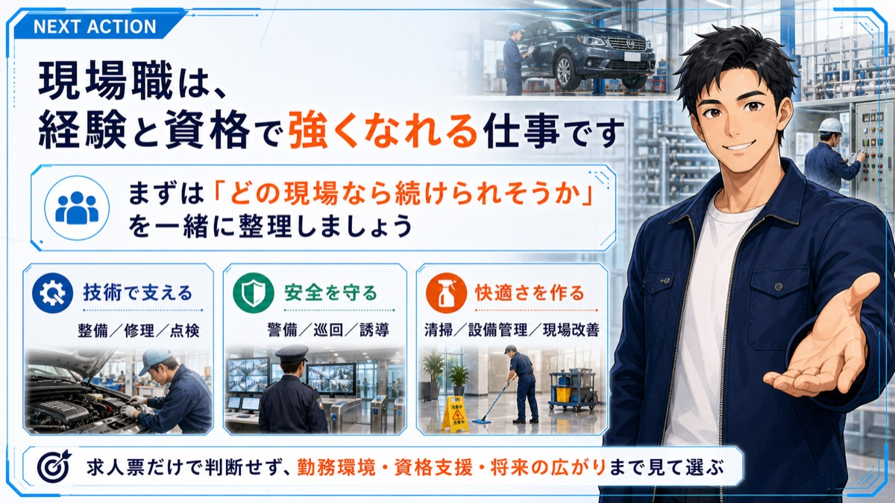

Job Lesson
技能工警備清掃職を理解する
技能工・警備・清掃職は、現場の安全・品質・快適さを守る仕事です。






次に見るもの
技能工警備清掃職に興味がある方は、面接前に回答の組み立て方も確認してください。
Job Lesson
技能工・警備・清掃職は、現場の安全・品質・快適さを守る仕事です。






技能工警備清掃職に興味がある方は、面接前に回答の組み立て方も確認してください。